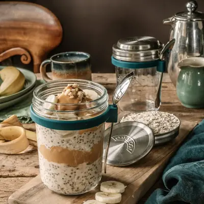
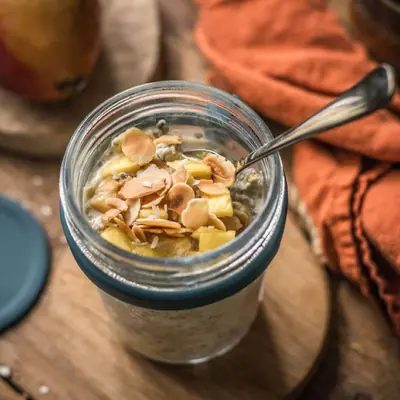
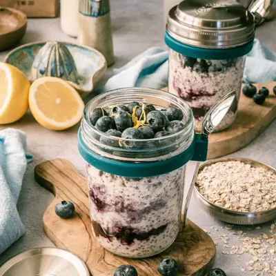
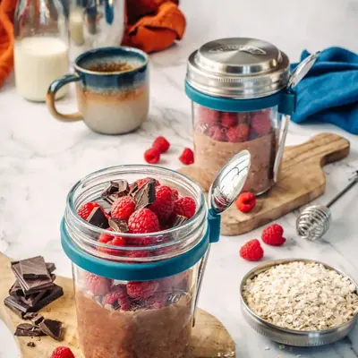
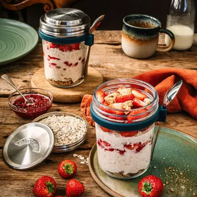
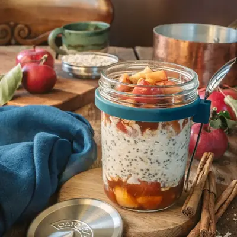
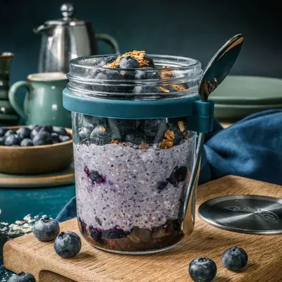
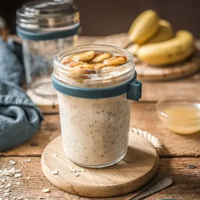

Your Recipes
Eight overnight oats, one jar. Tap a recipe to get started.

Peanut Butter & Banana

Mango & Coconut

Blueberry & Lemon

Chocolate & Raspberry

Strawberry Cheesecake

Apple Pie

Blended Berry

Banana Bread
Guides from the OATOLOGY Kitchen
Got 2 minutes? Help us make OATOLOGY even better.
Take a quick survey